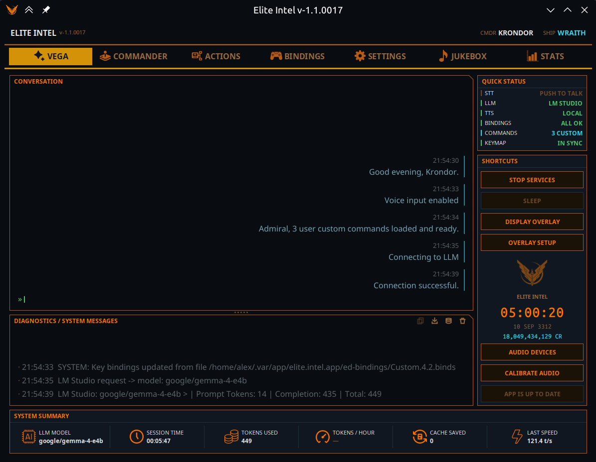

Elite Intel
Asistente de voz con IA para Elite Dangerous

Habla con naturalidad. Vuela mejor.
Elite Intel conecta tu voz con tu nave. Sin listas de comandos que memorizar, sin sintaxis rígida que aprender. Di lo que quieras decir y la IA se encarga del resto. Ya sea que estés gestionando los sistemas de la nave, trazando una ruta o escaneando un sistema en busca de señales, Elite Intel entiende tu intención y actúa en consecuencia.
Los datos se obtienen en tiempo real de Spansh y EDSM.
Idiomas admitidos: inglés, ruso, ucraniano, alemán, francés, español, italiano, portugués, portugués de Brasil
⚠️ Se necesita un modelo de lenguaje (LLM)
Elite Intel es la voz y las manos; el LLM es el cerebro. Sin él, la aplicación no puede funcionar. Ejecuta un modelo en local en tu GPU o usa el nivel gratuito en la nube de 👉 console.mistral.ai 👈 — sin tarjeta de crédito. Consulta LLM gratuito en la nube o Elegir tu LLM.
Inteligencia, no solo automatización
Elite Intel hace más que pulsar teclas en tu nombre. El modelo de lenguaje aplica conocimiento del dominio para darte un análisis significativo. Pídele que evalúe tu configuración actual y desglosará puntos fuertes, débiles y compromisos no te recitará una ficha técnica.
Los datos de sesión de los auto-escaneos y los resultados del FSS se incorporan directamente a consultas como "¿Qué hay en los escáneres?" o "Analiza las señales locales." La IA trabaja con lo que el juego expone. Cuando los datos no están disponibles porque solo existen en un panel y no en el diario lo dirá claramente.
Tu nave. Tu hardware. Tus reglas.
Elite Intel se ejecuta completamente en tu máquina. El pipeline completo (reconocimiento de voz, modelo de lenguaje y síntesis de voz) opera sin conexión. Sin cuenta en la nube, sin suscripción, sin que ningún dato salga de tu sistema.
¿Prefieres una configuración híbrida? Mezcla y combina libremente: reconocimiento de voz local con un modelo de lenguaje en la nube, o síntesis de voz en la nube con inferencia local. La elección es tuya.
Reconocimiento de voz que realmente funciona
Elite Intel usa el modelo transductor NVIDIA Parakeet para la conversión de voz a texto la misma clase de tecnología que se usa en herramientas de transcripción profesional. Se ejecuta tanto en Windows como en Linux sin configuración adicional ni entrenamiento.
Si has usado software de reconocimiento de voz con Elite Dangerous antes, espera una diferencia notable en precisión.
Una voz que encaja en la cabina
Supertonic 3 está integrado y funciona desde el primer momento. Sin descargas, sin claves API, sin configuración, y nada sale de tu PC. Ofrece 45 voces creadas para Elite Intel, y cada voz habla todos los idiomas que admite. En el habla rusa, la biblioteca RUAccent coloca el acento, de modo que las palabras cuyo significado depende de él se pronuncian correctamente. Puedes ajustar cada voz a tu gusto.
¿Prefieres una voz en la nube? Google TTS está disponible como opción. Requiere una clave API, que se configura en Servicios → Servicios de IA.
Tus controles, protegidos
BindForge edita tus controles de Elite Dangerous desde fuera del juego: teclado, ratón, joystick, HOTAS y pedales. Asigna cualquier dispositivo a cualquier ranura, repara conflictos, ajusta sensibilidades y zonas muertas, y da a tus mandos nombres reales y etiquetas de botones.
Una configuración compleja lleva horas, y una actualización del juego puede restablecerla. BindForge hace copias de tus archivos de controles cada día y antes de cada cambio, y puede devolverlos cuando los necesites.
Elige tu LLM
Elite Intel funciona con el modelo de lenguaje que mejor se adapte a tu configuración:
Gratis y sin conexión - LM Studio ejecutando un modelo local
Nube gratuita - Mistral - plan gratuito, sin tarjeta de crédito
Nube de pago - Anthropic, OpenAI, xAI, Gemini, DeepSeek
Cambia de proveedor en cualquier momento desde la pestaña Servicios. No se requiere reinstalación.
Comunidad
Elite Intel es de código abierto. Los informes de errores, solicitudes de funciones y pull requests son bienvenidos.
Únete a la comunidad en Matrix: 👉 #krondor:matrix.org 👈
¿Nunca has usado Matrix? 👉 Guía de Matrix (en inglés): crea una cuenta y entra en la sala paso a paso.
Mantén el control manual de los sistemas críticos de la nave en todo momento.